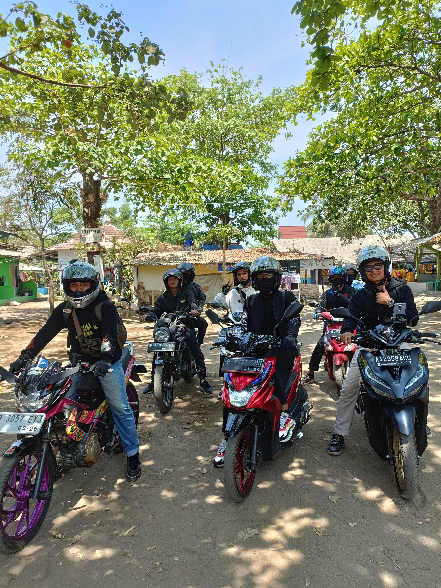
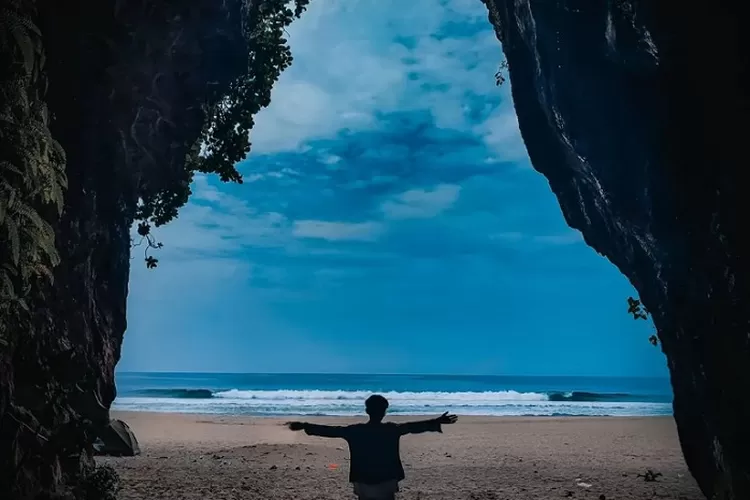
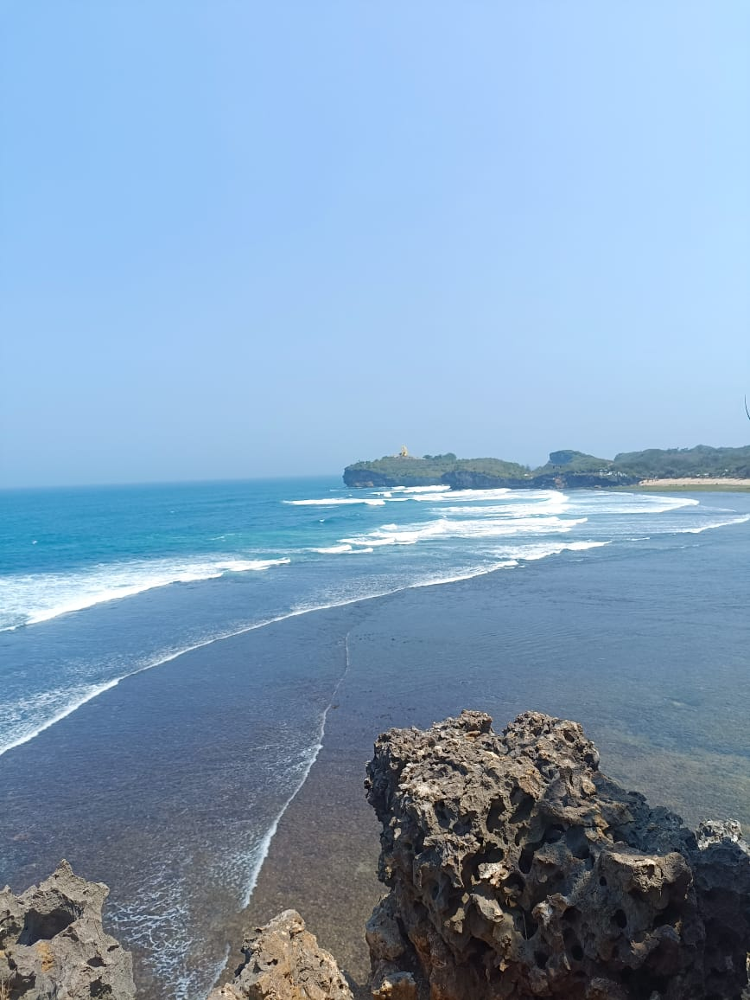
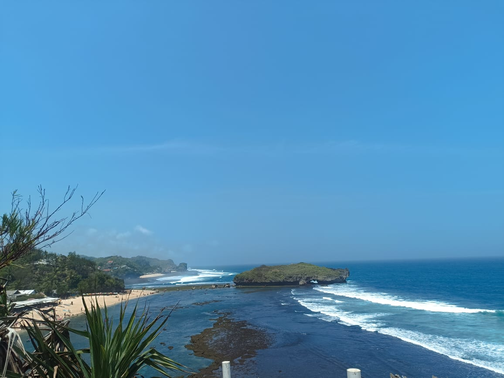
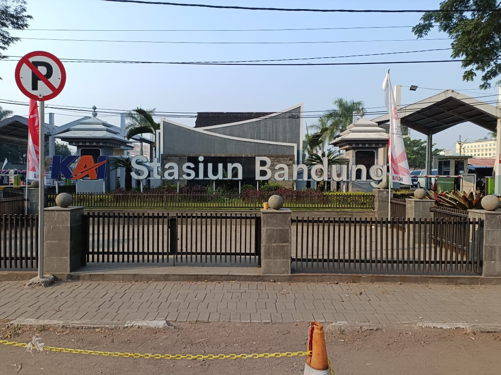

Ini adalah beberapa Kota Wisata yang pernah saya kunjungi
Kota Bandung Dan Sukabumi menurut saya adalah salah satu dari banyak nya tempat yang paling indah
untuk dijadikan sebagai tempat Berlibur.
1.Touring dan berlibur bersama teman kerja ke daerah Sukabumi
Harga Tiket masuk di Pantai yang berada disana berbeda-beda,dimulai dari Harga 5000 Rupiah
sampai 15.000 Rupiah.
Untuk menyewa penginapan disana harganya pun bervariasi,untuk hari biasa (weekday) dikenakan Tarif dari 80RB sampai 150RB Dan untuk hari Libur (weekend) bisa dikenakan Tarif dari harga 200RB sampai 350RB.
Makanan dan Jajanan disanapun terbilang cukup mudah untuk didapatkan,karena disana sudah banyak penjual yang terletak dipinggir Pantai tersebut.




2.Tempat wisata Kota Bandung
Bandung terkenal dengan penduduknya yang ramah, mereka menjunjung tinggi kepercayaan. Selain ramah disapa akang dan teteh, Bandung termasuk kota yang memiliki toleransi tinggi. Selain itu, kota ini juga terkenal ramah bagi para pendatang baru maupun wisatawan yang sedang berlibur.

3.Tempat Wisata Ciwidey
Ciwidey terkenal sebagai kawasan pertanian dan perkebunan dengan tanaman stroberi sebagai ikon utamanya.
Harga Tiket Wisata Ciwidey 2024
Kawah Putih: Rp20.000 per orang. Situ Patenggang: Rp18.000 per orang. Ranca Upas: Rp22.000 per orang. Perkebunan Teh Rancabali: Gratis